My UX journey from everyday observations to designing “Journey Genie” (Dubai Airport website, 2012)
My Tasks: User Research, UX Design

Background
In 2012, Dubai International, one of the busiest international airports, aimed to revamp its corporate website to boost online traffic. The existing website was a traditional information site consisting of mixed content aimed at various target audiences. As a UX freelancer, I was part of the StartJG Hong Kong team responsible for redesigning the online experience for Dubai Airport.
My Role
I am grateful to have joined the team and would like to thank the senior UX designer, Stephen Pills, for allowing me to design the information architecture and strategic features of the website in its initial stages, from November 2012 to December 2012. I collaborated with a UI designer, a front-end developer, and a technical manager during this period. I handed over the project to Stephen during the detailed visual design phases. The responsive website and app were launched globally in 2014.
Challenge
To boost online traffic, we couldn't stick to business audiences — we had to extend our target audience to public passengers. However, I faced several challenges:
- No hints on the existing website. After conducting the UX audit, I found the information architecture of the previous website had excessive corporate information, mainly focused on airport business partners rather than the public passengers.
- No domain knowledge. I am Asian and did not know the airport business, especially for mid-east airports. What should I do?
- Provide value for the target audience to stay. We should give our target audiences a reason to visit the website and motivate them to stay longer. What information might they seek?
Our high-level goals included: segmenting the information architecture to cater to different audience types (passengers and corporate partners); identifying the primary needs of passengers using the website; and implementing innovative engagement features to enhance the user experience.
Research
Initial Research — Image Content Review and Analysis
Before starting the project, I had the advantage of staying at Dubai Airport, where I captured over 1,000 photographs depicting passenger behaviours, signage, and store layouts. These images were invaluable assets for my analysis. I looked at: what kinds of things appeared most (people; items such as signage and shops); what common activities users took during their stay; what functions did those items serve; and who appeared in the photos most.
Based on these findings, I formulated a hypothesis to guide further research and design decisions: when passengers have long layovers between flights, their experience can be good if they plan ahead, or bad if they don't — and organised people would look for layover tips online.
Advanced Research — What do travellers discuss the most regarding Dubai Airport?
I conducted an in-depth exploration of various travel forums to pinpoint the most frequently discussed topics. Most visitors asked about what they should do during a layover at the airport; the other popular topics were about the way to the airport and meeting friends at the airport.
According to flight information from the airport, the shortest transit time could be just 45 minutes, while the longest transit time could be 3 days.
Conclusion: if a passenger has only 45 minutes to make a transit connection, it can be quite stressful — mainly due to needing to travel to another terminal for their connecting flight. For example, if a passenger arrives at Terminal 1 and needs to depart from Terminal 3, the total walking distance could take up to 43 minutes, leading to a lot of anxiety.
Solution
I remember when I was staying at the airport, I observed many people preferred to wait near the departure gate for a few hours. I understood why — they might not know what could be done during transit, didn't know the nearest restaurant or public rest place, or just didn't want to spend money. All of this is about way-finding and journey planning. If I could design a tool for them to plan their airport journey before the trip, and make the site easy to find staying tips, it could enhance their experience at the airport. This was the design direction of my work.
What is Journey Genie?
Journey Genie is a fingertip feature that enables passengers to customise the information they receive by inputting their specific flight on the Dubai Airport website. It also had an SMS feature to remind the passenger about the gate closing time. The website mirrors the whole passenger's journey, and the information architecture allows passengers to better navigate airport information and facilities before they arrive.
The Journey Genie should tell the passenger: what should be prepared before their flight; what would happen after arrival; where they could go for rest or dining if they need to connect flights; and what kinds of facilities could be used while staying at the airport.
I designed the IA according to the passenger's journey in reality, separating passenger information from corporate information. Since passengers would visit the website at the early stage of the journey, I put the journey planner (Journey Genie) in an obvious position on the site, to keep passengers coming back.
After several discussions with Dubai Airport, Stephen and I agreed to remove the time display, because the airport working team couldn't guarantee the security checking time, which would make passengers disappointed easily. SMS notification was kept in the latest version of the website.
Impact
The new website was launched in 2014. According to the 2014 year report, 600,000 people visited dubaiairports.ae per month in 2015.
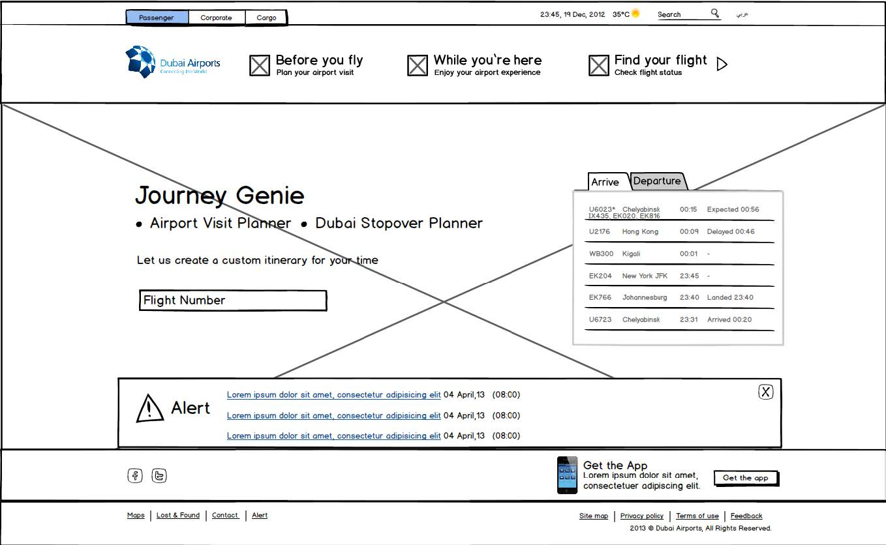
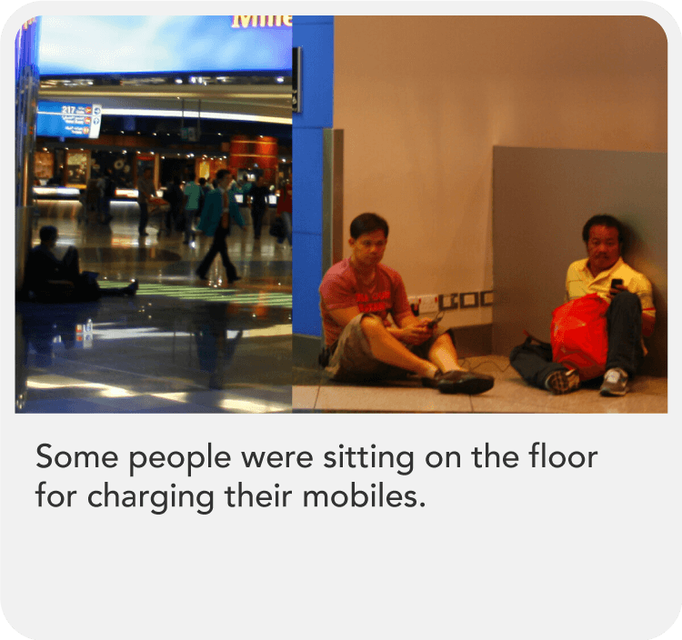
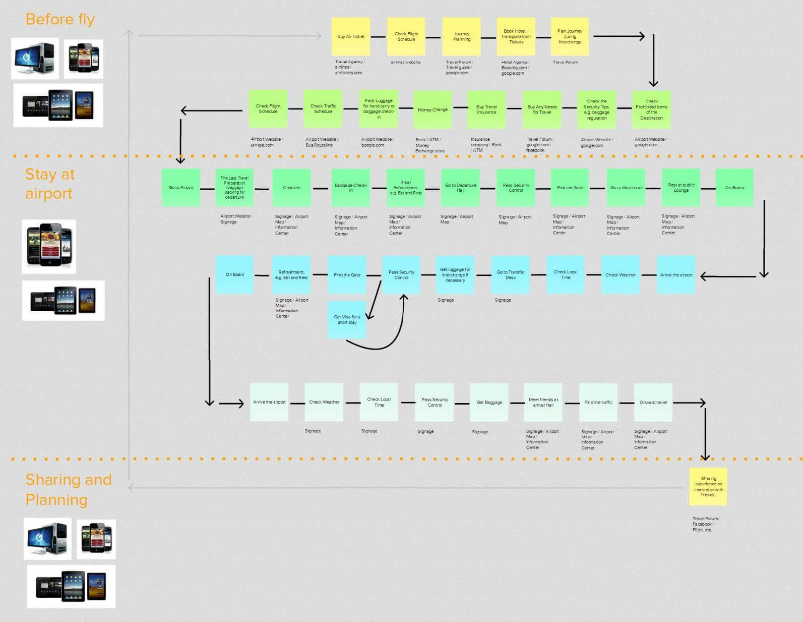
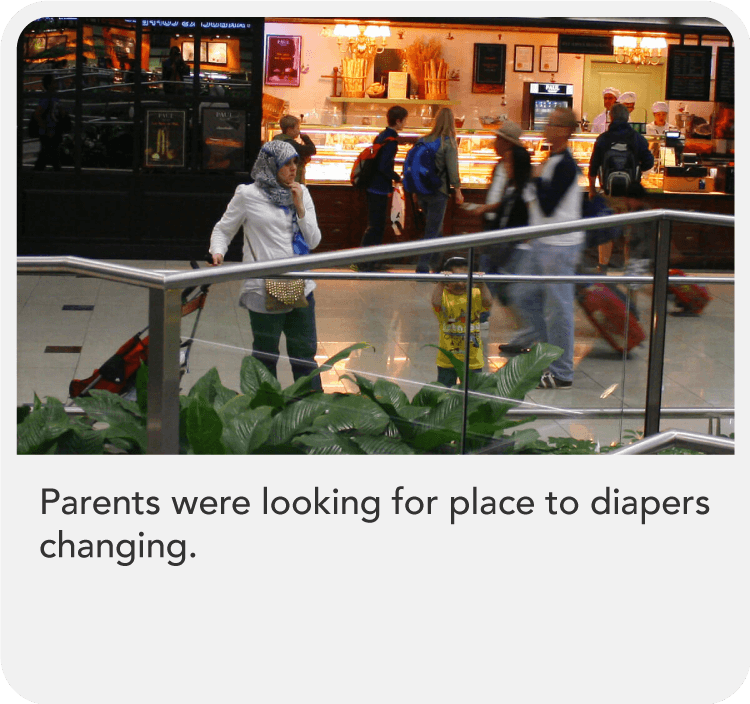
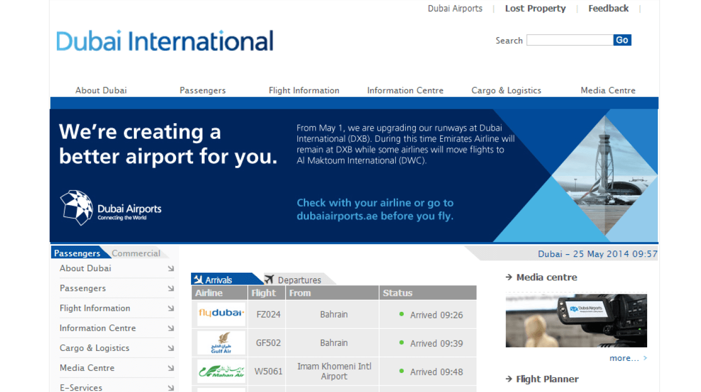
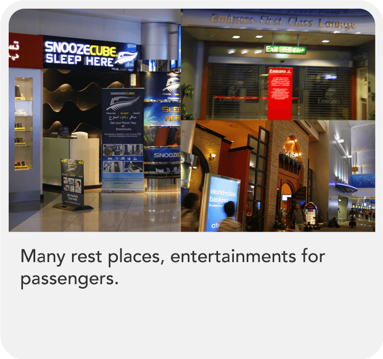
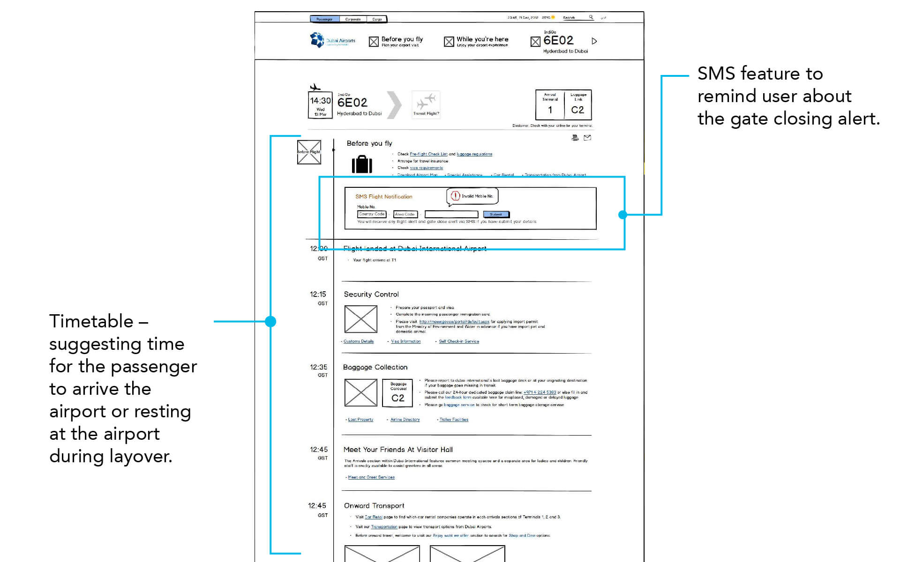
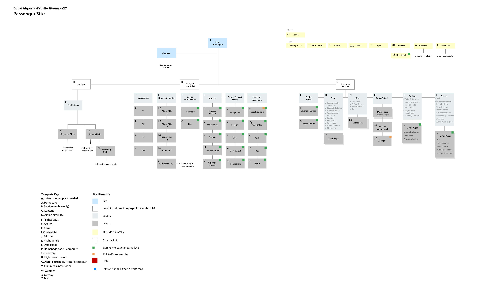
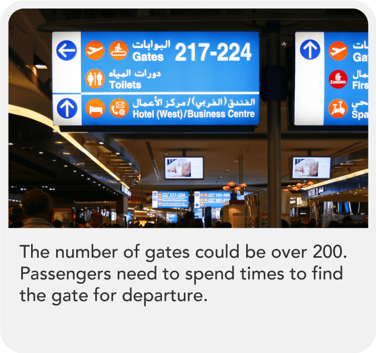
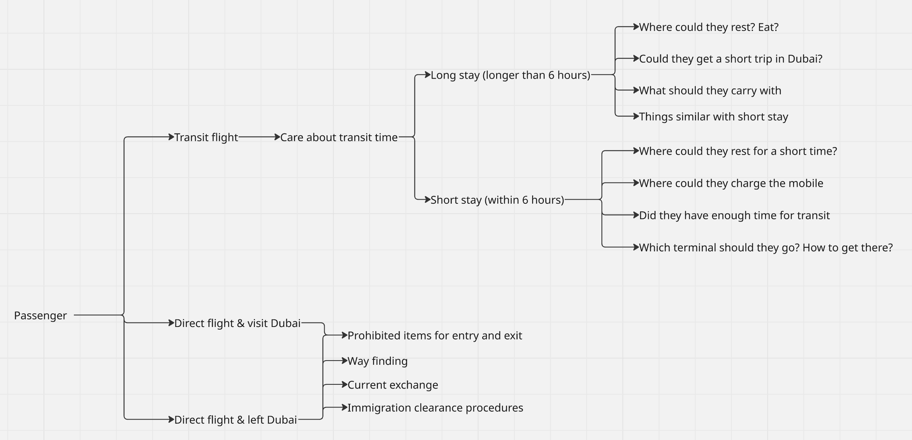
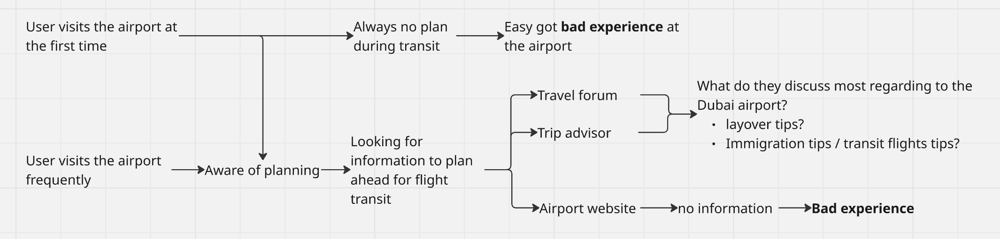
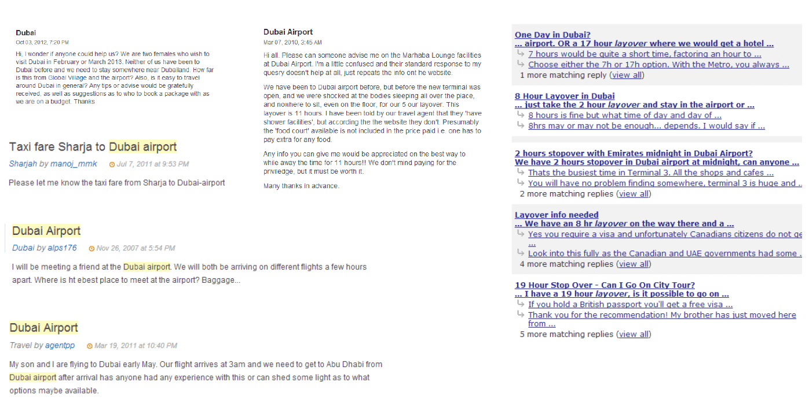
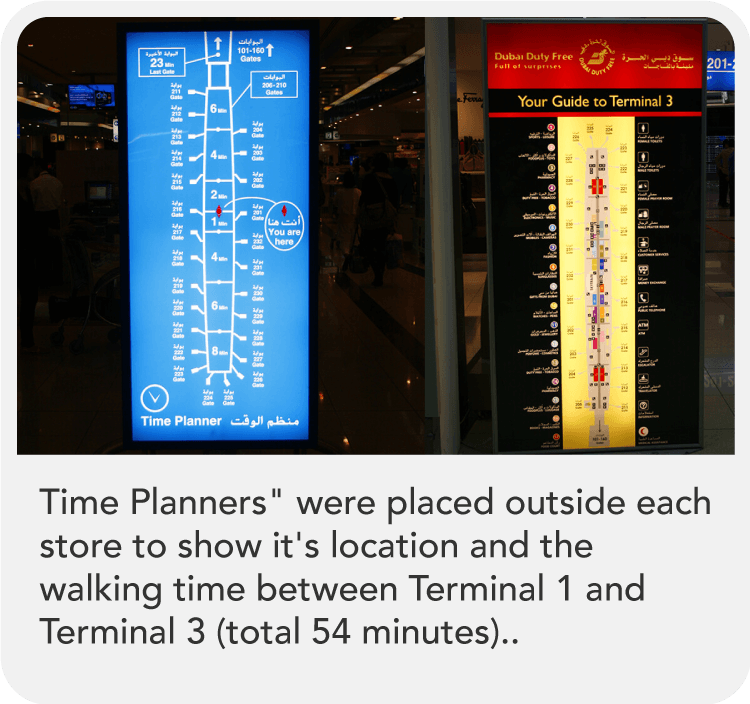
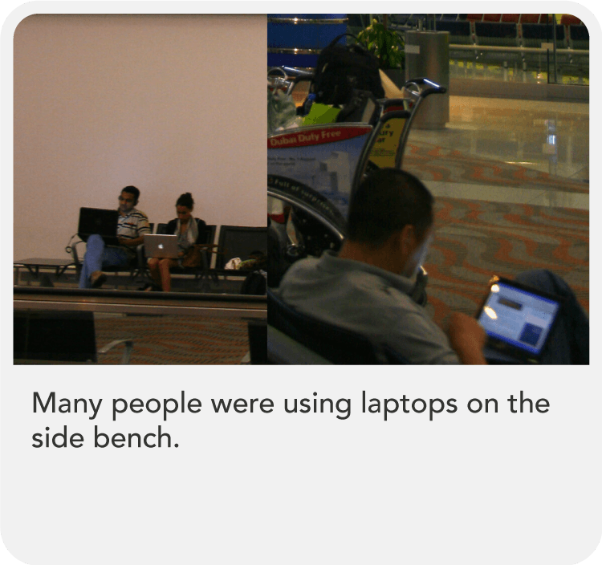